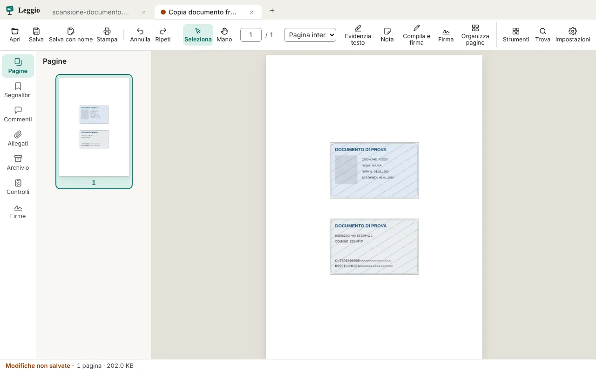
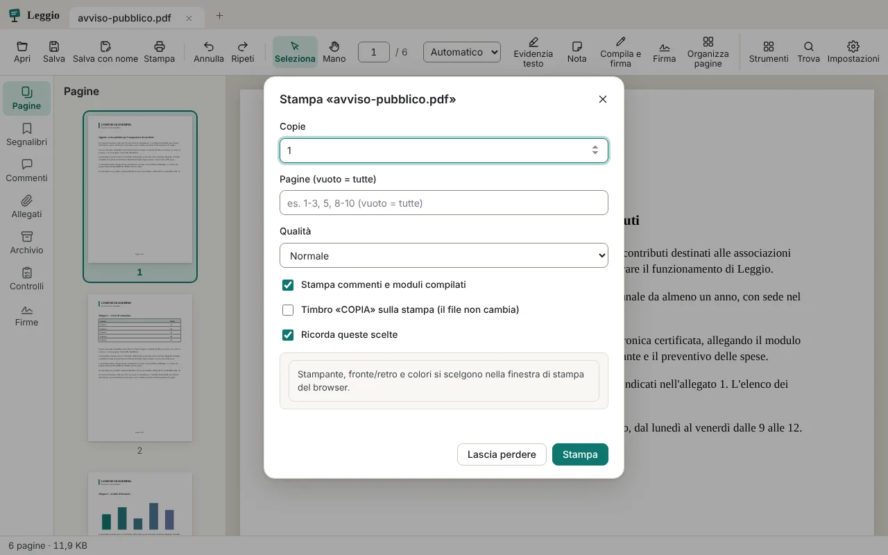
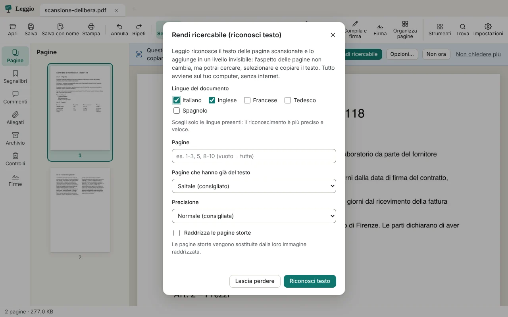
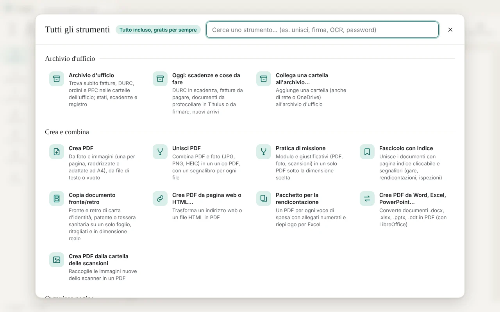

Il programma per i PDF libero e gratuito, pensato per chi lavora con i documenti negli uffici italiani.
Leggi, modifica, firma, proteggi e converti i PDF. Apri i file firmati .p7m, fai la copia fronte/retro dei documenti d'identità, stampa senza sorprese. Senza abbonamento, senza account, senza pubblicità: i tuoi file restano sul tuo computer.
Leggio è un programma per computer che apre, modifica, firma e protegge i documenti PDF. Mette insieme in un solo posto le funzioni che di solito sono sparse tra un lettore gratuito, un editor a pagamento e diversi siti web.
Perché esiste
Chi lavora con i documenti spesso deve scegliere tra un abbonamento costoso e i siti «PDF online», dove i file finiscono sui server di qualcun altro. Leggio nasce per dare a tutti le stesse funzioni, gratis e senza che i documenti lascino mai il computer.
Per chi è
Per chi lavora ogni giorno con PDF, firme digitali .p7m e documenti della pubblica amministrazione: uffici, scuole, comuni, studi professionali, associazioni. E per chiunque voglia un programma semplice, in italiano, per i propri documenti.
Libero e gratuito, per davvero
Leggio è software libero con licenza GPL-3.0: si può usare, copiare e condividere senza pagare nulla, anche in ufficio. Il codice sorgente è pubblico su GitHub: chiunque può controllare che cosa fa.
I tuoi documenti restano tuoi
Leggio funziona senza Internet. I file non escono mai dal computer: niente account, niente cloud, niente statistiche d'uso. L'unico collegamento è un controllo facoltativo degli aggiornamenti, una volta al giorno: una richiesta anonima a GitHub, che puoi spegnere nelle Impostazioni.
Fatto per gli uffici italiani
Interfaccia in italiano, timbri pronti («RICEVUTO», «PAGATO»…), file firmati .p7m, fatture elettroniche, messaggi PEC, oscuramento dei codici fiscali e degli IBAN. Per Windows, macOS e Linux.
Cosa fa
Le novità più importanti, poi tutto il resto. Le immagini sono schermate vere di Leggio, con documenti di esempio inventati.
Novità
Copia documento fronte/retro
Come la funzione «copia carta d'identità» delle fotocopiatrici. Parti dalla scansione del fronte e del retro di una carta d'identità, patente o tessera sanitaria, ognuno su una pagina A4: Leggio trova il documento, lo ritaglia, lo raddrizza e mette fronte e retro su un solo foglio A4, a grandezza reale (85,6 × 54 mm), pronto da stampare.
Tutto avviene sul tuo computer: le scansioni non vengono inviate da nessuna parte.
Se serve, sposti gli angoli a mano, ruoti o capovolgi.
Filigrana facoltativa «Copia per uso esclusivo di … – data».
Le scansioni di partenza non vengono modificate.
Leggio trova da solo il documento nella scansione.

Il risultato: fronte e retro su un foglio A4.
Novità
Modifica del testo, anche nelle tabelle
Correggi un refuso o riscrivi un paragrafo con lo stesso carattere del documento. Nelle tabelle di fatture e moduli modifichi una cella alla volta: le altre celle restano esattamente dove sono, e i numeri restano allineati.
Aggiungi testo, immagini, loghi e link.
Trova e sostituisci in tutto il documento.
Una cella della fattura cambiata senza spostare le altre.
Novità
File firmati .p7m, aperti in sicurezza
Apri i documenti firmati digitalmente (.p7m, anche con più firme) e vedi chi ha firmato, quando e se il documento è integro, con spiegazioni in italiano chiaro.
Il file firmato originale non viene mai toccato: il PDF contenuto si salva a parte, con un nome diverso.
Rapporto di verifica in PDF da allegare alla pratica.
In Windows i file .p7m hanno la loro icona e il loro tipo di file.
Il pannello «Firme» di un file .p7m.
Novità
Stampa affidabile, di tutte le pagine
Stampa tutte le pagine, anche dei formati grandi, con trasparenze o caratteri incorporati: niente più fogli bianchi o stampe che si fermano alla prima pagina.
Copie, pagine scelte, fronte/retro, più documenti insieme.
Timbro «COPIA» solo sulla carta: il file non cambia.

La finestra di stampa.
E tutto il resto
Leggere e cercare
Più PDF in schede, anche protetti da password. Zoom, due pagine affiancate, modalità lettura, tema chiaro e scuro, caratteri grandi. Ricerca nel testo e in tutti i PDF di una cartella, lettura ad alta voce. Ripara da solo i file danneggiati.
Commentare
Evidenzia, sottolinea, barra; note, caselle di testo, disegni, forme e misure. Timbri pronti in italiano o personali, riepilogo dei commenti, scambio con Acrobat.
Organizzare le pagine
Riordina, ruota, elimina, estrai e inserisci pagine. Unisci e dividi PDF, anche per la dimensione massima della PEC. Numeri di pagina, intestazioni, filigrane, più pagine per foglio.

Creare, convertire e OCR
PDF da foto, scansioni, Word, Excel, PowerPoint e pagine web. Esporta in Word, Excel, testo e immagini. Rende ricercabili le scansioni senza Internet. Confronta due versioni di un documento. PDF/A per la conservazione.
Moduli e firme
Compila qualunque modulo, anche quelli non compilabili, e riempi con un clic i tuoi dati o quelli dell'ente. Firma grafica e firma digitale con certificato o con il programma di firma già installato, anche di molti file insieme. Verifica delle firme.
Proteggere i dati
Password e limiti a stampa e copia. Oscuramento vero dei dati riservati (codici fiscali, IBAN, email…), anche cercandoli in automatico. Modelli pronti per le copie dei documenti d'identità: numero, codice MRZ, firma, foto, codice fiscale e indirizzo vengono eliminati davvero dal file.

Ufficio e pubblica amministrazione
Archivio d'ufficio sulle cartelle già in uso, con scadenze e pagina «Oggi». Fatture elettroniche impaginate, DURC, messaggi PEC con ricevute e allegati, preparazione per Titulus, dichiarazione di conformità, azioni su molti file insieme.
Sicuro e accessibile
Annulla e Ripeti, salvataggio sicuro, recupero dei documenti dopo un arresto improvviso. Uso completo da tastiera, controllo e preparazione dell'accessibilità dei PDF.
Leggio e le alternative
Un confronto rapido sulle cose che contano di più per un ufficio. Gli altri programmi cambiano nel tempo: qui sono descritti in generale, per come sono offerti oggi.
Scorri la tabella di lato per vedere tutte le colonne →
Confronto tra Leggio, Adobe Acrobat Reader, Adobe Acrobat Pro e i siti PDF online
Caratteristica
Leggio
Acrobat Reader (gratuito)
Acrobat Pro (a pagamento)
Siti PDF online (tipici)
Costo
Gratuito
Gratuito
Abbonamento
Gratis con limiti, o abbonamento
Funziona senza Internet, i file restano sul computer
Sì
Sì, per leggere e commentare
In gran parte; alcune funzioni usano il cloud
No: i file vanno caricati sul sito
Modificare il testo del PDF
Sì, anche le celle delle tabelle
No
Sì
A volte, con limiti
Aprire e verificare i file .p7m
Sì
No
No
Solo su siti dedicati
Copia documento d'identità fronte/retro su un foglio
Sì, a grandezza reale
No
Non come funzione apposita
Di solito no
Serve un account
No
Solo per alcune funzioni
Sì
Spesso
Codice sorgente aperto
Sì (GPL-3.0)
No
No
Di solito no
Adobe, Acrobat e Acrobat Reader sono marchi di Adobe. Leggio è un progetto indipendente, non collegato ad Adobe. Se trovi un'informazione non aggiornata, segnalacelo.
Non sai che Mac hai? Menu Apple (la mela in alto a sinistra) → Informazioni su questo Mac: se leggi «Chip Apple M…» scegli chip Apple, se leggi «Processore Intel» scegli Intel.
Linux
AppImage (x86_64)Leggio-versione-linux-x86_64.AppImage — rendila eseguibile e aprila
Le impronte di tutti i file sono anche nel file SHA256SUMS.txt pubblicato insieme alla versione, sulla pagina delle versioni.
Domande frequenti
Scaricando o aprendo Leggio compare un avviso di sicurezza: è normale?
Sì. Il browser o il sistema possono dire che il file «non viene scaricato spesso» o che «lo sviluppatore non può essere verificato». Non significa che il file sia dannoso. Succede perché Leggio, per ora, non è firmato con un certificato (un certificato di sviluppatore costa ogni anno) ed è un programma nuovo, quindi Microsoft e Apple non hanno ancora «visto» abbastanza persone scaricarlo. La firma è prevista: quando ci sarà, questi avvisi spariranno.
Nell'elenco dei download, passa sul file e premi … (altre azioni).
Scegli Mantieni.
Premi Mostra altro, poi Mantieni comunque.
Google Chrome
Se il download viene segnalato come insolito, apri l'elenco dei download.
Premi Mantieni accanto al file.
Windows: «Windows ha protetto il PC»
Nella finestra blu di SmartScreen premi Ulteriori informazioni.
Controlla che il nome sia Leggio-… e premi Esegui comunque.
Non serve la password di amministratore.
macOS: «impossibile verificare lo sviluppatore»
Apri il file .dmg e trascina Leggio nella cartella Applicazioni.
In Applicazioni, fai clic destro (o Ctrl + clic) su Leggio e scegli Apri, poi ancora Apri.
Da macOS 15 in poi: prova ad aprire Leggio una volta, poi vai in Impostazioni di Sistema → Privacy e sicurezza, scorri in basso e premi Apri comunque.
Serve solo la prima volta.
Come controllo che il file scaricato sia quello giusto?
Con l'impronta SHA-256: una «firma» di 64 caratteri calcolata dal contenuto del file. Se cambia anche un solo byte, cambia tutta. Confronta quella del file scaricato con quella mostrata in questa pagina (o nel file SHA256SUMS.txt della versione): devono essere identiche.
Windows
Apri il menu Start, scrivi PowerShell e premi Invio.
Scrivi il comando qui sotto (il percorso cambia se hai scaricato altrove) e premi Invio:
Il risultato è nella colonna Hash (in maiuscolo: va bene lo stesso).
macOS e Linux
Apri il Terminale (su Mac: Launchpad → Altro → Terminale).
Scrivi il comando e premi Invio:
shasum -a 256 ~/Downloads/Leggio-versione-mac-arm64.dmg
Su Linux va bene anche sha256sum. Se hai scaricato anche SHA256SUMS.txt nella stessa cartella: shasum -a 256 -c SHA256SUMS.txt --ignore-missing.
È davvero gratuito? Dov'è il trucco?
Nessun trucco: Leggio è gratuito per tutti, anche per gli enti e le aziende, e non ha versioni «Pro», pubblicità o periodi di prova. È software libero con licenza GPL-3.0: il codice è pubblico e chiunque può controllarlo, migliorarlo e ridistribuirlo alle stesse condizioni.
Leggio invia i miei documenti da qualche parte?
No. Tutto, compreso il riconoscimento del testo (OCR) e la copia dei documenti d'identità, avviene sul tuo computer. Non c'è un account, non c'è un cloud e non vengono raccolte statistiche d'uso. L'unico collegamento a Internet è il controllo degli aggiornamenti descritto qui sotto, che non invia dati personali e si può spegnere.
Anche questa pagina non usa cookie, statistiche o caratteri scaricati da altri siti: chiede soltanto a GitHub l'elenco dei file dell'ultima versione.
Su quali computer funziona?
Windows 10 e 11 (64 bit, con installer o in versione portatile), macOS 12 o successivo (Mac con chip Apple e Mac Intel) e Linux a 64 bit (AppImage). Non esiste una versione per telefoni e tablet.
Come funzionano gli aggiornamenti?
Una volta al giorno Leggio chiede a GitHub se esiste una versione nuova: una sola richiesta anonima, senza dati personali. Se c'è, compare un avviso con il pulsante per scaricarla dalla pagina ufficiale; decidi tu se e quando. Apri il file scaricato e segui le istruzioni: documenti e impostazioni restano al loro posto. Il controllo si spegne nelle Impostazioni: in quel caso basta tornare su questa pagina ogni tanto.
Ho trovato un problema o ho un'idea: come la segnalo?
Su GitHub c'è un modulo guidato per le segnalazioni e uno per le proposte. Dentro Leggio, il menu Aiuto → «Segnala un problema…» prepara già le informazioni tecniche utili, senza i tuoi documenti.